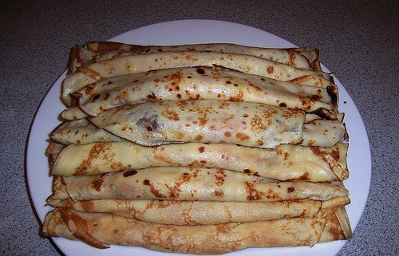

|
 |
|
Postupak:
U veću zdjelu ulijemo dva jaja, 150 grama glatkog brašna, 300g mlijeka i malo soli.
Pjenjačom dobro izmješati kako bi se dobila glatka smjesa, na zagrijanoj tavi s malo ulja ulijevajte zajmačom navedenu smjesu te je brzim okretanjem tave rasporedite po cijeloj površini. Kada palačinka na površini promijeni boju okrenite je pomoću palete i kratko pecite na drugoj strani. Za kraj namazati nutellu. |
|